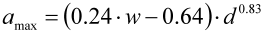
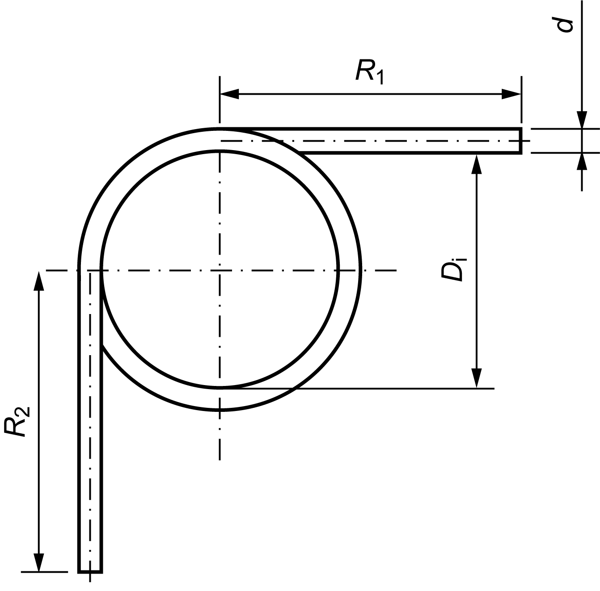
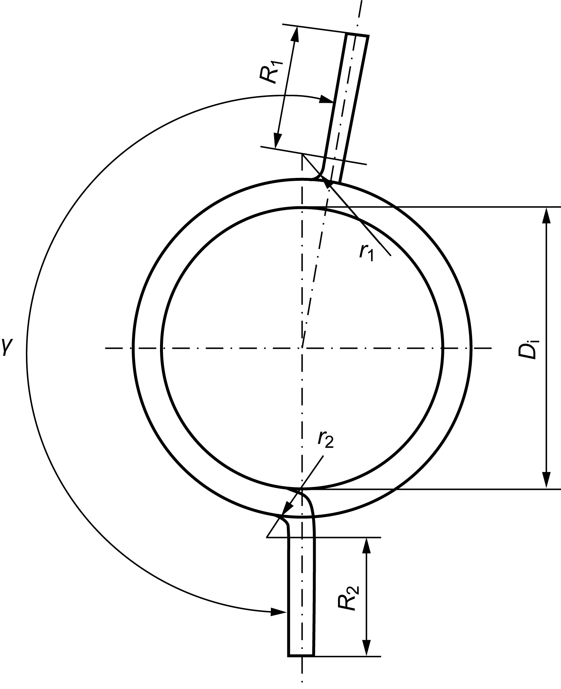

|
|
|


弹簧设计
为防止摩擦，弹簧圈之间应互不接触或仅承受轻微应力。对于可实现的最大绕制间隙，适用以下公式：

通常，扭簧是绕制的。扭簧腿有两种设计选项：可以带偏置弯曲（必须指定半径），也可以切向。
|  |  |
| 带切向腿 | 带偏置腿 |
English Original
Spring design
To prevent friction, the coils should either not touch each other or be under only slight stress. The following applies, for the greatest achievable winding clearance:
Generally, leg springs are wound. There are two options for the leg design: they can be either bent with offset (the radius must be specified) or tangential.
| with tangential legs | with offset legs |